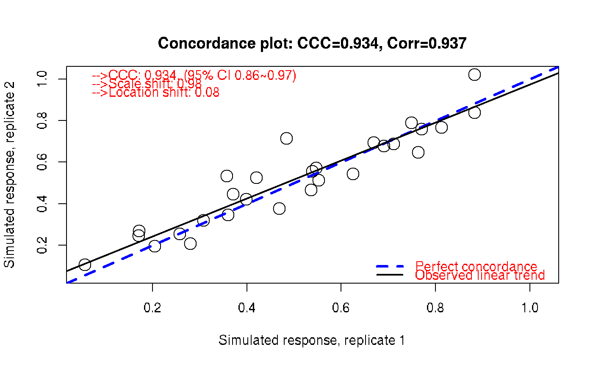

R/drexplorer_ccc.R
plotCCC.RdThis function calculates and plots concordance for paired data. Infinite values in x and y are masked as NA so as to compute CCC and corr (otherwise, nan).
plotCCC( x, y, xlab = NA, ylab = NA, tag = "", col_legend = "red", pch = 1, main = NA, cex = 2, plot = TRUE, ylim = NA, xlim = NA, maskBeyondLim = FALSE, plotOutlier = FALSE, sampleName = NA, alpha_outlier = 0.01 )
| x | x vector. |
|---|---|
| y | y vector. |
| xlab | xlab. |
| ylab | ylab. |
| tag | add a tag. |
| col_legend | color for legend text. |
| pch | pch of the points. |
| main | main title. |
| cex | for the dots. |
| plot | whether draw a figure. |
| ylim | y axis limit. |
| xlim | x axis limit. |
| maskBeyondLim | whether mask values beyond xlim (for x) or ylim (for y) when xlim and ylim is specified. Default is FALSE so that even xlim ylim specified, CCC will not be affected. |
| plotOutlier | logical whether add an outlier plot comparing Diff vs Mean plot and related statistics. |
| sampleName | symbols of the text to be shown in outlier plot. |
| alpha_outlier | alpha to call outliers based on the observed differences assuming from Normal(mean_diff, sd_diff). |
a vector of c('ccc', 's_shift', 'l_shift', 'ccc_lo', 'ccc_hi', 'Cb', 'corr'). s_shift is scale shift; l_shift is location shift; ccc_lo and ccc_hi represent 95 interval for CCC. Cb for the bias correction term satisfying CCC=corr*Cb where corr is the Pearson correlation.
set.seed(100) r1 <- runif(28) r2 <- r1+rnorm(28, 0, 0.1) ccc <- plotCCC(r1, r2, xlab = 'Simulated response, replicate 1', ylab = 'Simulated response, replicate 2')